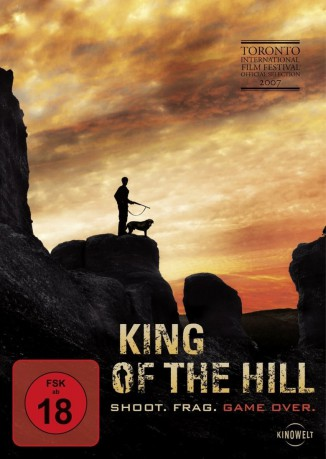

gesehen am 06.09.2018
gesehen am 06.09.2018Alternativ: El rey de la montaña gesehen am 06.09.2018
 
 IMDB-Wertung: 6.2 / 10
IMDB-Wertung: 6.2 / 10  Metascore:
Metascore: 
In einer abgeschiedenen ländlichen Gegend Spaniens verfährt sich Quim (Leonardo Sbaraglia) nach einer längeren Autofahrt. Urplötzlich hallt ein Schuß durch die bergige Landschaft und trifft sein Auto. Noch nicht ganz verstehend, was soeben geschehen ist, steigt er aus, um den Schaden zu begutachten. Kurz darauf trifft ihn ein zweiter Schuß ins Bein. Verzweifelt versucht er, aus der ausweglosen Abgeschiedenheit zu entkommen, doch dies stellt sich als schwierig heraus. Auf seiner Flucht trifft er die schöne, aber geheimnisvolle Bea (María Valverde) wieder, mit der er zuvor einen heftigen Flirt an einer Tankstelle hatte. Doch damit bieten sich dem Schützen nun zwei Zielscheiben an...
Jahr: 2007
Dauer: 88 Minuten
FSK: 18
Land: Spanien Studio: Kinowelt Home EntertainmentTonspuren:
Untertitel:
Auflösung: 1080p (1920x1040) Größe: 6277 MB
Genre: Thriller
Regisseur: Gonzalo López-Gallego
Drehbuch: Javier Gullón, Javier Gullón, Gonzalo López-Gallego
Soundtrack: David Crespo
Darsteller:
 Leonardo Sbaraglia als Quim
Leonardo Sbaraglia als Quim María Valverde als Bea
María Valverde als BeaDatei: X:\FSK18-2000-2009\King of the Hill (2007, FSK18, 1920x1040).mkv seit 31.08.2018
Festplatte: FSK18
 Es gibt insgesamt 106 Filme in der Gruppe 'FSK18-2000-2009'
Es gibt insgesamt 106 Filme in der Gruppe 'FSK18-2000-2009'